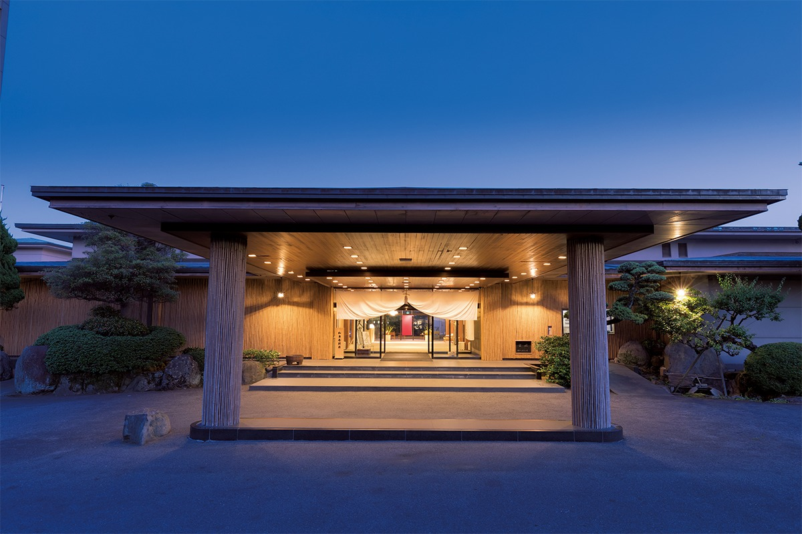
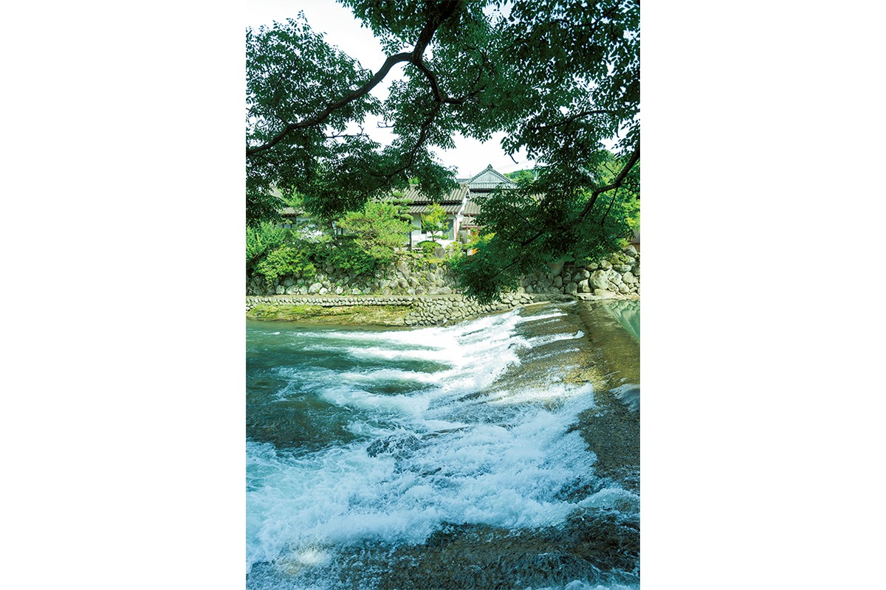
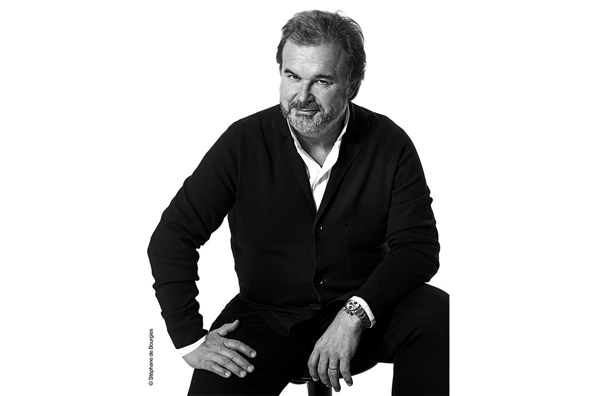
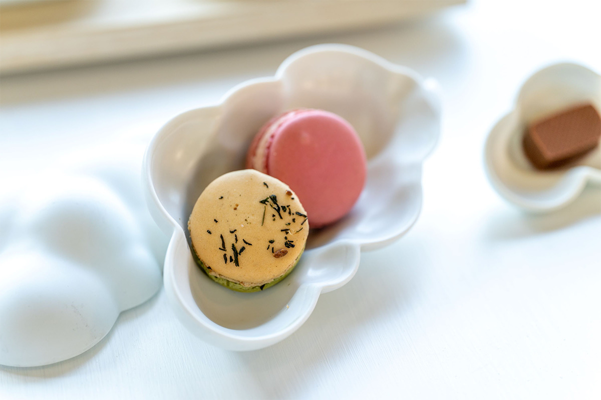
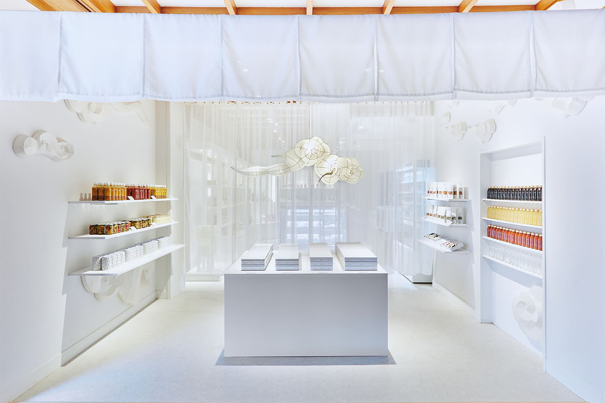
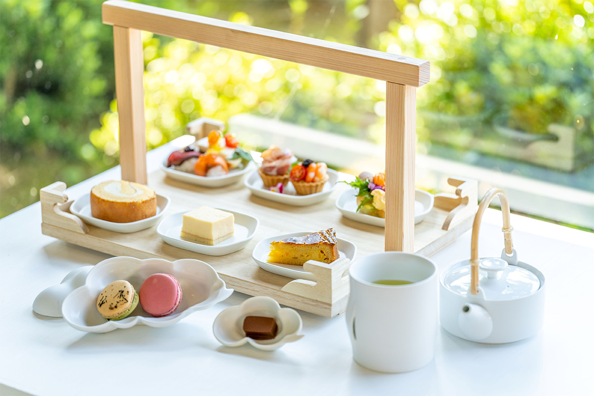
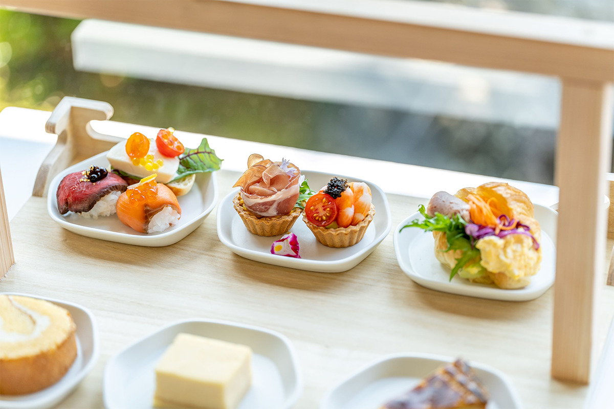
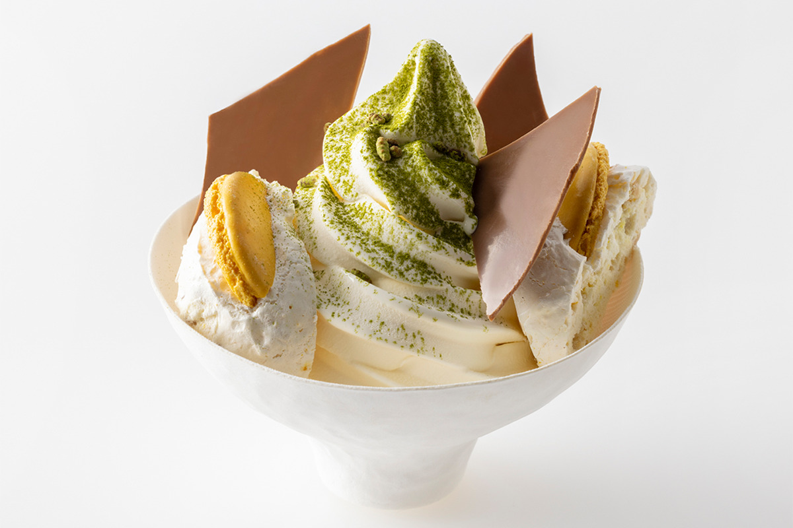
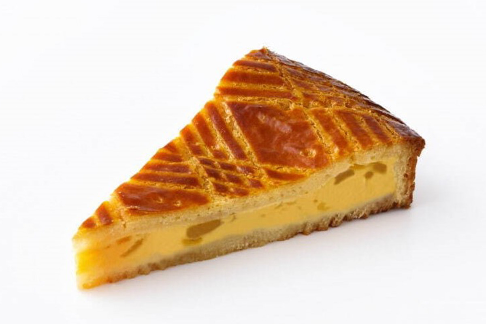
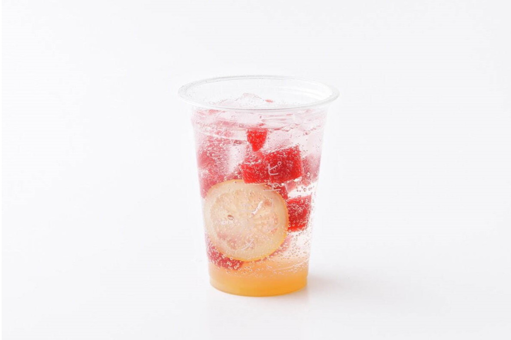

Префектура Сага · Уресино · рёкан и кафе
Wataya Besso в Уресино: старый рёкан у реки и кафе Пьера Эрме с видом на сад

Уресино на западе префектуры Сага знаменит тремя вещами: зелёным чаем, фарфором Хидзэн-Ёсида и горячими источниками. Рёкан Wataya Besso собрал их под одной крышей, а в 2021 году открыл у себя кафе Пьера Эрме.
Рёкан
Wataya Besso: город в городе на берегу реки
Чай, фарфор и онсэны в Уресино передаются из поколения в поколение уже несколько веков. Здешний чай вырос на земле, где когда-то впервые стали обжаривать чайный лист в котле. Его растят на террасах среди туманных гор и в котловине, и у зелёного чая Уресино глубокий цвет, сильный аромат и насыщенный вкус. Ради одной чашки такого чая в город едут нарочно: это направление называют чайным туризмом.
Wataya Besso стоит по обоим берегам реки Сиота, на территории в 20 000 цубо. Здесь две гостиницы, ресторан и спа на горячих источниках. В 2020 году рёкан уже предлагал гостям поездки, в которых соединялись чай Уресино, онсэн и фарфор Хидзэн-Ёсида.

Многие части огромной территории долго стояли без дела. Рёкан сдаёт их в аренду и постепенно восстанавливает: собственные плотники бережно обновляют здания, сохраняя японскую архитектуру и дух эпохи Сёва. В ноябре 2021 года, к 71-й годовщине рёкана, здесь запустили Reborn Wataya Project и открыли или обновили сразу семь заведений. Главным из них стало кафе Пьера Эрме.
Мастер
Пьер Эрме и японские продукты

Эрме известен тем, что всю жизнь ищет новые сочетания и при этом предельно строг к продуктам и технике. Его пирожные отличаются точностью и сдержанной красотой. Бренд охотно работает с японскими продуктами, а линия Made in Pierre Hermé задумана для того, чтобы показывать миру лучшее, что есть в Японии. Для такой витрины выбрали именно Wataya Besso.
Кафе
Лаунж с видом на сад «Хаконива»
Первое кафе Made in Pierre Hermé открылось в рёкане в 2021 году. За два года команда познакомилась с продуктами и фермерами префектуры Сага, и 1 июля 2023 года кафе перезапустили с новым меню. Рёкан хотел, чтобы в него приходили не только ночевать, но и просто заглядывали, как в любимое место. В августе 2025 года кафе переименовали в Pierre Hermé Paris Café.


Кафе занимает угол лаунжа, откуда виден японский сад «Хаконива», и террасу с площадкой для любования луной. Меню построено на местных продуктах: макаронс с органическим чаем Уресино, новый шоколадный террин, а ещё мягкое мороженое, которое в 2023 году впервые появилось в префектуре Сага.
Афтернун-ти
Десерты на фарфоре Хидзэн-Ёсида
Главное в меню это афтернун-ти из десертов на продуктах со всей Японии. Макаронс и шоколадный торт делают с листом чайной плантации «Китано тяэн» из Уресино: около 35 лет там выращивают чай без химических удобрений, пестицидов и гербицидов. К ним добавляют сезонные угощения. Всё подают на белом фарфоре, который специально для кафе сделала мастерская 224porcelain из Хидзэн-Ёсида. В 2023 году афтернун-ти стоил 5500 иен на человека.


Кроме сета, в 2023 году в меню были отдельные десерты и напитки. Мягкое мороженое с чаем гэммайтя из Уресино стоило 880 иен. Баскский пирог гато баск с цитрусом ансэйкан, который родом с острова Иносима в префектуре Хиросима, продавали за 660 иен. Лимонную содовую с клубничным желе предлагали за 693 иены. Пирог и содовая были сезонными и продавались до 31 августа 2023 года.



Pierre Hermé Paris Café
- Адрес
- префектура Сага, Уресино, Уресино-мати, Симосюку-оцу, 738 (в рёкане Wataya Besso)
- Телефон
- +81 954-42-0210
- Часы работы
- 11:00–18:00 (афтернун-ти в 11:30 и 14:00, по предварительной записи)
- Выходные
- среда
- Цены / Вход
- афтернун-ти 5500 иен на человека
- Сайт
- wataya.co.jp
Wataya Besso
- Адрес
- префектура Сага, Уресино, Уресино-мати, Симосюку-оцу, 738
- Телефон
- +81 954-42-0210
- Сайт
- wataya.co.jp
Фото: Хиромаса Мацумото.